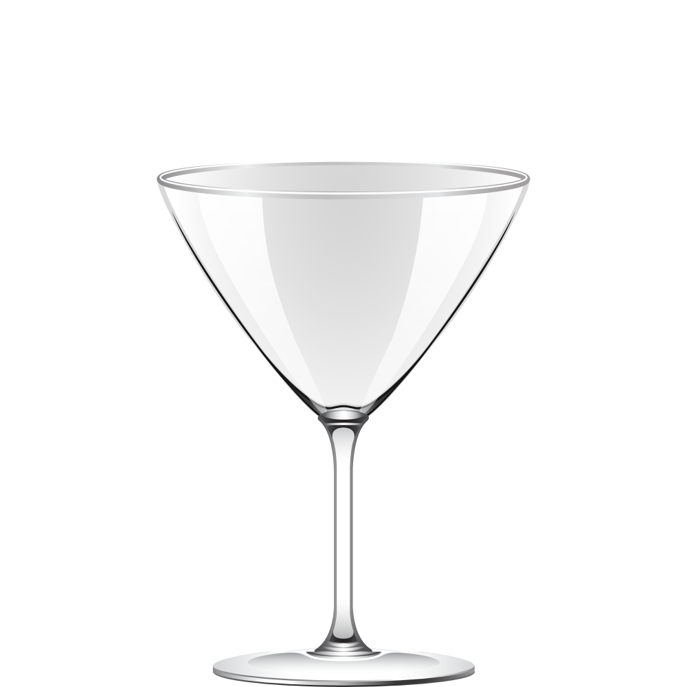

<div class="glass">
    
    
    
    
    
    
</div>

<div class="glassButtons">
    <button #undoBtn type="button" (blur)="stopHistory()" (click)="undo()"[disabled]="undoDisabled"><span class="fa fa-undo fa-2x" aria-hidden="true" ></span></button>
    <button type="button" (click)="reset()"><span class="fa fa-refresh fa-2x" aria-hidden="true"></span></button>
    <button #redoBtn type="button" (blur)="stopHistory()" (click)="redo()"[disabled]="redoDisabled"><span class="fa fa-repeat fa-2x" aria-hidden="true" ></span></button>
</div>